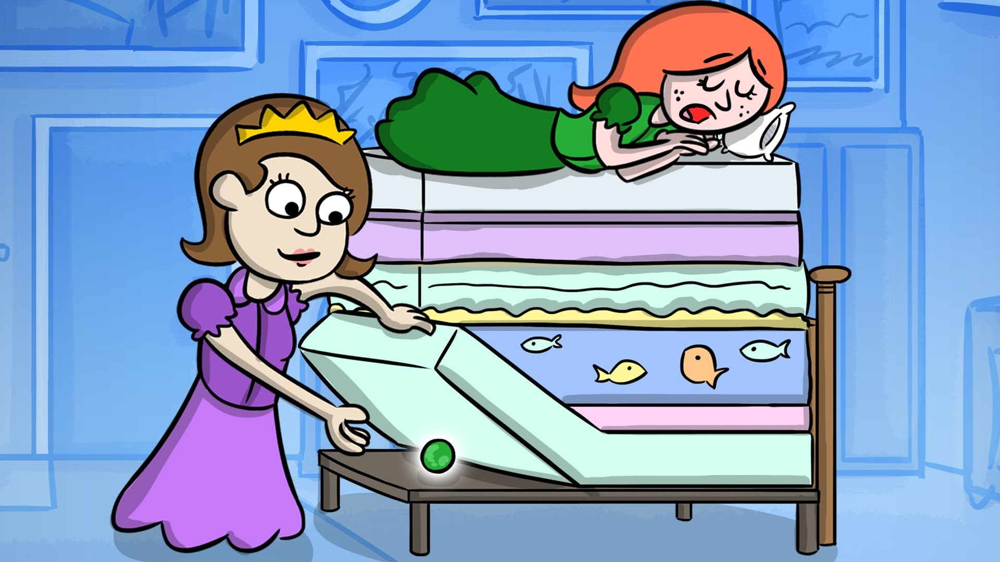
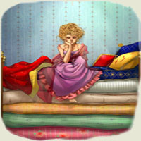

Era odată un prinţ şi prinţul acela voia să se însoare cu o prinţesă, dar cu o prinţesă adevărată.
Şi a cutreierat toată lumea ca să găsească una pe placul lui şi tot n-a găsit. Prinţese erau destule, dar el nu putea să ştie dacă erau cu adevărat prinţese, fiindcă tuturora le lipsea câte ceva. Şi prinţul s-a întors iar acasă şi era foarte necăjit, pentru că tare ar fi vrut să găsească o prinţesă adevărată.
Într-o seară, tocmai se stârnise o furtună cumplită, tuna şi fulgera şi ploua cu găleata; era o vreme îngrozitoare. Deodată s-a auzit cum bate cineva la poarta oraşului şi regele, tatăl prinţului, s-a dus să deschidă.
La poartă era o prinţesă. Vai, dar în ce hal era din pricina ploii şi a vremii rele! Apa îi curgea şiroaie pe păr şi pe haine şi îi intra în pantofi pe la vârfuri şi ţâşnea înapoi pe la călcâie. Dar zicea că-i prinţesă adevărată.
– Bine, las’ că vedem noi îndată! s-a gândit regina, dar n-a spus nimic; s-a dus în odaia de culcare, a luat toate saltelele din pat şi a pus pe scândurile patului o boabă de mazăre. Pe urmă a pus peste mazăre douăzeci de saltele de lână şi pe saltele douăzeci de perne mari de puf.

Aici s-a culcat prinţesa. Dimineaţa au întrebat-o cum a dormit.
– Groaznic de prost! a răspuns prinţesa. Toată noaptea n-am închis ochii. Dumnezeu ştie ce a fost în pat! Am şezut pe ceva tare şi acuma-s toată numai vânătăi! Groaznic!

Şi atunci au văzut cu toţii că era o prinţesă adevărată, dacă a simţit ea o boabă de mazăre prin douăzeci de saltele şi douăzeci de perne de puf. Aşa de gingaşă la piele nu putea să fie decât numai o prinţesă!
Şi prinţul a luat-o de nevastă, fiindcă acum ştia hotărât că asta-i prinţesă adevărată; iar boaba de mazăre au pus-o în odaia unde erau bijuteriile coroanei şi se mai poate vedea acolo şi astăzi dacă n-o fi luat-o careva.
Şi asta să ştiţi că-i o poveste adevărată.
| Categoria | Nr. | Enumerarea |
|---|---|---|
| Personaje | 4 | Regele, Regina, Prințul și Prințesa |
Sursa:
PovestiEtape:
Etapa 1 Etapa 2 Etapa 3